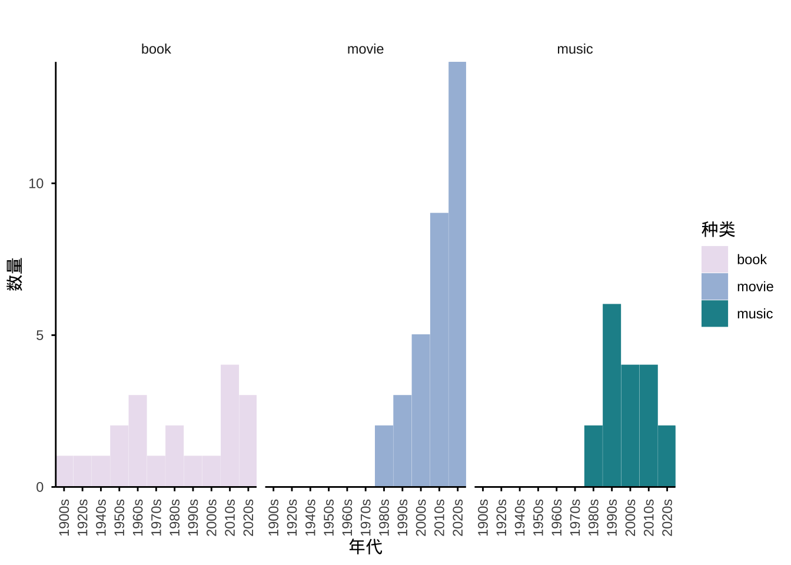

| date | name | author | publish | rating | comment |
|---|---|---|---|---|---|
| 2026-01-03 | 死亡笔记 | 大场鸫/小畑健 | 2006 | 10 | 犯罪/推理杰作，情节、节奏和画风都非常完美，看得爽死 |
| 2026-01-10 | 绣春刀 | 路阳 | 2014 | 8 | 张震一如既往的帅，服化道还是那么棒，剧情和某几个人演技有点硬伤，不过瑕不掩瑜 |
置顶 | 工业风豆瓣
book
movie
music
documentary
review
中文
书影音记录
A record of all (finished) books/movie/anime/live music since Aug ’23 + some statistics.
I’m fighting my instinct of doom-scrolling & giving up half-way!
年度总结
2026
2026年，我一共看了 0 本书，2 部电影/动画，0 场演出。
ongoing…
2025
2025年，我一共看了 5 本书，8 部电影/动画，7 场演出。
| date | name | author | publish | rating | comment |
|---|---|---|---|---|---|
| 2025-02-05 | 小径分岔的花园 | J.L. Borges | 1941 | 8 | 意境很美的小说 |
| 2025-03-05 | 蜘蛛女之吻 | M. Puig | 1976 | 10 | 结构精巧，内容动人的小说，两位主角都是那么的惹人喜爱… |
| 2025-08-15 | 九故事 | J.D. Salinger | 1953 | 10 | 充满禅意的杰作，让人后悔自己没在青春期读到它们 |
| 2025-08-17 | 在路上 | J. Kerouac | 1957 | 10 | 非常美丽而浪漫的公路小说，为了它我可以再次爱上美国 |
| 2025-09-05 | 抬高房梁，木匠们/西摩小传 | J.D. Salinger | 1963 | 6 | 抬高房梁还不错，西摩小传无法欣赏 |
| date | name | author | publish | rating | comment |
|---|---|---|---|---|---|
| 2025-06-05 | Nosferatu | R. Eggers | 2024 | 7 | 吸血鬼色情片，吸血鬼草了男女主两个人 |
| 2025-08-14 | 魔法少女小圆 | 新房昭之 | 2011 | 9 | 叙事非常完满的杰作，无须多言 |
| 2025-10-26 | 电锯人剧场版：蕾塞篇 | 藤本树/吉原达矢 | 2025 | 7 | 打斗画面非常可以，但完全没给context，不看原著估计一头雾水 |
| 2025-11-25 | Harry Potter and the Prisoner of Azkaban | A. C. Orozco | 2004 | 8 | 唯一一部值得看第二遍的哈利波特电影 |
| 2025-12-18 | The Aviator | M. Scorsese | 2004 | 8 | 蛮好的，开飞机的部分很喜欢，结尾略有点意犹未尽 |
| 2025-12-19 | The Banshees of Inisherin | M. McDonagh | 2022 | 7 | 略微有点意味不明，但画面非常美丽 |
| 2025-12-23 | Zootopia 2 | J. Bush/B. Howard | 2025 | 7 | 平平无奇的迪士尼电影，情节有点偷懒了，但画面和细节值得 |
| 2025-12-31 | Avatar 3: Fire and Ashes | J. Cameron | 2025 | 7 | 同上 |
| date | tour | headliner | opener | location | venue | rating |
|---|---|---|---|---|---|---|
| 2025-02-21 | Les Chants de l’Aurore | Alcest | Kælan Mikla, MONO | Baltimore MD | Baltimore Soundstage | 10 |
| 2025-04-17 | La Luz Spring Tour | La Luz | Color Green | Baltimore MD | Ottobar | 9 |
| 2025-05-05 | Grand National Tour: Kendrick Lamar and SZA | Kendrick Lamar, SZA | Mustard | Philadelphia PA | Lincoln Financial Field | 10 |
| 2025-05-10 | Romance | Fontaines D.C. | Jadu Heart | Washington DC | The Anthem | 10 |
| 2025-06-05 | Somewhere in Time | RINI | Bathe | Los Angeles CA | The Belasco | 8 |
| 2025-07-05 | 口 Aha | Carsick Cars | 苏州 | 山丘LiveHouse | 9 | |
| 2025-10-25 | 破晓还潮 | Sadless | 野草 The Ruderals | Lafayette IN | Digby’s Pub & Patio | NA |
我可以解释…因为申请、毕业和适应新学校什么的…（心虚（算了今年就是不思进取！全部用来doomscrolling了！不好！
2024
2024年，我一共看了 9 本书，15 部电影/动画，9 场演出。
| date | name | author | publish | rating | comment |
|---|---|---|---|---|---|
| 2024-01-10 | 论中国 | H. Kissinger | 2011 | 8 | 中美关系/20世纪新中国史入门 |
| 2024-01-19 | 1968 撞击世界的年代 | M. Kurlansky | 2009 | 8 | 非常详尽的1968年世界学运史 |
| 2024-02-17 | Warhol | K. Honnef | 2000 | 8 | 不错的书。着重于对Warhol艺术概念的介绍，挺有启发性的，图很好看，内容更多点就好了。虽然本来买了是想看VU的八卦——八卦是一点都没有 |
| 2024-02-17 | UNCUT ultimate genre guide shoegaze | UNCUT | 2021 | 8 | 粉丝狂喜的一本杂志。对想了解这个流派的人也很有帮助 |
| 2024-03-13 | Creation Stories | A. McGee | 2013 | 4 | 如果你不是和我一样是一位正在绝望地从全世界找资料给盯鞋乐队拉磨的同人女的话，这本书真的没什么看的必要。讲McGee嗑昏过去的部份比讲怎么运营乐队的部份多 |
| 2024-05-09 | 霍乱时期的爱情 | G. Marquez | 1985 | 9 | 重读依旧很喜欢 |
| 2024-05-26 | 仿生人会梦见电子羊吗 | P. Dick | 1968 | 9 | 相当不错的小说 |
| 2024-12-13 | 我们最幸福 | B. Demick | 2009 | 9 | 除了朝鲜的部分，这些脱北者开启新生活的决心也让人印象深刻。女性真是坚强啊 |
| 2024-12-26 | 倚天屠龙记 | 金庸 | 1961 | 7 | 感觉也没什么特别打动人的地方，那种文笔挺好的龙傲天小说即视感，四个妹妹已成梗 |
| date | name | author | publish | rating | comment |
|---|---|---|---|---|---|
| 2024-01-19 | 咒 | 柯孟融 | 2022 | 7 | 邪教片，拍得不错，作为无神论者没啥后劲 |
| 2024-01-19 | 1991: The Year Punk Broke | D. Markey | 1992 | 6 | 音乐录影带。现场很棒，叙事几乎没有。说好听点就是很忠实的客观记录吧 |
| 2024-02-17 | Withnail & I | B. Robinson | 1987 | 8 | 疯子天才Withnail和没那么天才却也没那么疯的Marwood，需要有一定英国文化和时代背景知识储备才能有感触的电影…心情和电影里的阴雨一般闷闷的 |
| 2024-03-15 | DIG! | O. Timoner | 2004 | 8 | 在乐队纪录片中算质量很高了，我觉得可以与Supersonic媲美。讲的是90S Mozart vs. Salieri (Brian Jonestown Massacre vs. The Dandy Warhols) 的故事，虽然这样的叙事是以消耗客观性为代价的，但作为电影很棒 |
| 2024-04-01 | All Watched Over by Machines of Loving Grace | A. Curtis | 2011 | 8 | 相当不错的纪录片，观后感得单独摘出来写 |
| 2024-05-26 | This Is Spinal Tap | R. Reiner | 1984 | 7 | 狠狠地拿摇滚文化开涮了，感想是很爽 |
| 2024-05-26 | Beautiful Noise | E. Green | 2014 | 7 | 著名的盯鞋纪录片，信息量蛮足的，和这个genre一样是性冷淡风（笑 |
| 2024-05-29 | Upside Down: The Creation Records Story | D. O’Connor | 2010 | 8 | 比McGee自己写的那书好看多了 |
| 2024-10-20 | Blade Runner 2049 | D. Villeneuve | 2017 | 7 | 剧情有点落入俗套，每个人一张嘴你就知道他们想要说什么 |
| 2024-10-20 | The Shape Of Water | G. del Toro | 2017 | 8 | Underrepresented Baltimore people beat the shit out of a Texas racist。虽然剧情很老套但人外太萌音乐太好听画面太美我原谅了一切，喜欢chill到爆的巴尔的摩vibe |
| 2024-12-22 | 蓦然回首 | 藤本树/押山清高 | 2024 | 8 | 蛮好的虽然感觉节奏把控上和原作有挺大区别……这个分主要还是给原作 |
| 2024-12-22 | 狂飙 | 徐纪周 | 2023 | 9 | 非常好看的警匪剧 |
| 2024-12-24 | Blade Runner | R. Scott | 1982 | 10 | 重温了一遍还是觉得非常完美 |
| 2024-12-26 | Lost in Translation | S. Coppola | 2003 | 10 | 很好看的片子…总之就是很好看的片子，讲述成年人生活的困惑 |
| 2024-12-26 | My Own Private Idaho | Gus Van Sant | 1991 | 10 | 非常喜欢的氛围和节奏，让人看了觉得悲伤且无力，但又不会愤怒，只是淡淡的…… |
| date | tour | headliner | opener | location | venue | rating |
|---|---|---|---|---|---|---|
| 2024-01-19 | Between Nowhere | RIDE, The Charlatans | Philadelphia PA | Union Transfer | 10 | |
| 2024-05-11 | Interplay 1st Leg | RIDE | Knifeplay | Boston MA | Big Night Live | 10 |
| 2024-06-14 | The Collective | Kim Gordon | Bill Nace | Philadelphia PA | Union Transfer | 7 |
| 2024-07-16 | Frog in Boiling Water | DIIV | Dutch Interior, Horse Jumper of Love | Washington DC | Howard Theatre | 9 |
| 2024-08-09 | The Saviors | Green Day | Rancid, The Linda Lindas, The Smashing Pumpkins | Philadelphia PA | Citizen Bank Park | 7 |
| 2024-10-06 | The Psychedelic Furs & The Jesus and Mary Chain | The Jesus and Mary Chain, The Psychedelic Furs | Frankie Rose | Washington DC | The Anthem | 8 |
| 2024-10-29 | 冀西南林路行 | 万能青年旅店 | New York NY | Terminal 5 | 9 | |
| 2024-11-17 | Everything is Alive | slowdive | quannnic | Washington DC | The Anthem | 8 |
| 2024-12-07 | Interplay 2nd Leg | RIDE | Rocket | Washington DC | 9:30 Club | 8 |
过得最爽的一年。
2023
2023年，我一共看了 4 本书，1 部电影/动画，2 场演出。
| date | name | author | publish | rating | comment |
|---|---|---|---|---|---|
| 2023-08-19 | 那不勒斯四部曲 | E. Ferrante | 2018 | 10 | 新颖的视角，细腻的文笔 |
| 2023-08-26 | 存在主义咖啡馆 | S. Bakewell | 2016 | 7 | 不错的入门书 |
| 2023-09-14 | 德米安：彷徨少年时 | H. Hesse | 1919 | 7 | 虽然有很多名言警句，但依然不是很能理解这种精神状态 |
| 2023-10-06 | 存在主义是一种人道主义 | J.P. Sartre | 1946 | 10 | 醍醐灌顶 |
| date | name | author | publish | rating | comment |
|---|---|---|---|---|---|
| 2023-12-23 | 燃冬 | 陈哲艺 | 2023 | 4 | 拍摄手法出了大问题 |
| date | tour | headliner | opener | location | venue | rating |
|---|---|---|---|---|---|---|
| 2023-11-08 | Still… At Their Very Best | The 1975 | Dora Jar | Baltimore MD | CFG Bank Arena | 7 |
| 2023-12-09 | Bluebond Band Program Holiday Concerts | Philadelphia PA | Bluebond Guitar Shop | NA |
数据分析
这就是为什么这个博客要用Quarto的原因。
+ 哪些天不是读书天
读书指的是读正经书。也就是说所有的文艺活动都在不务正业、玩物丧志之列。看看啥时候我最不务正业吧。
现场音乐不在统计之列，因为这主要看乐队什么时候巡演，不是我能决定的……

很明显，冬天没法出门所以在装文艺逼。夏天全部用来现充了，是好事啊（是好事啊
+ 比大时代晚了千分之一秒
“你和我出生在尘埃落定后的时代，晚了千分之一秒” ——乔伊斯（极乐迪斯科）
看看我到底是时代的弄潮儿还是活在20世纪的老古董…？

看书比较平均，60年代较多，这也确实是我想要的；电影看的都是最近上映的（本来就并非狂热电影迷）；音乐嘛，我是狂热的90年代爱好者，这确实也体现出来了…
&居然最近三年完全没有看过19世纪及以前的书。震撼。
+ 所以到底每年花了多少时间读书？
丢人时间到（用总字数算的）：
| year | total_words | hours |
|---|---|---|
| 2023 | 1498000 | 83 |
| 2024 | 2566000 | 143 |
| 2025 | 561500 | 31 |